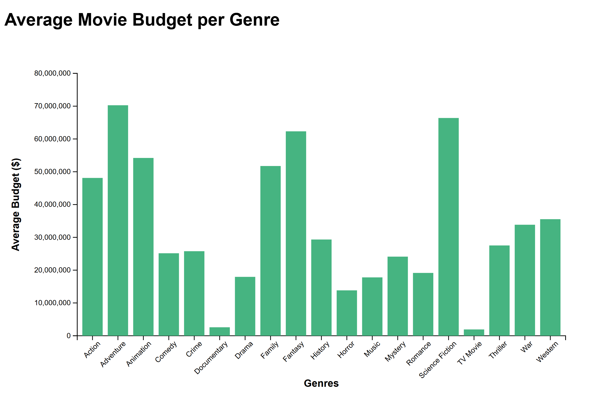

Findings
Number of Movies per Genre with Average Popularity
The histogram above displays the number of movies belonging to each genre within the iMDb movie dataset, with the x-axis representing the various
genres and the y-axis representing a number ranging from 0 to 4000 movies within a genre. Additionally, when you hover your cursor over each bar,
a variety of information appears including the specific number of moves, calculated average poularity score, and a common set of keywords associated
with each genre. The histogram reveals that the most commonly produced movies exist within the "Action", "Comedy", and "Drama" genres, while the least
produced movies are contained within the "TV Movie", "Western", "War", and "Documentary" genres. This conclusion is reasonable since movies are generally
made for public enjoyment and entertainment rather than an informative purpose which would explain the higher rates of action, comedy, and drama movies.
In regards to the hover data, it appears there's no obvious pattern between average popularity scores and commonality of movies in a genre since genres with
few movies could have either really high or really low average popularity scores. For example, with "History" having under 500 movies in its genre it has an
average popularity score of 17.03 which is comparable to the "Comedy" genre of just under 2500 movies but a nearly equivalent average
popularity score of 17.35.
Interactive Scatterplot - How Genre Influences Movie Popularity & Ratings
This interactive scatterplot visualizes the relationship between movie popularity and average user rating and explores how different genres perform in the terms of public perception and reach.
The x-axis represents popularity as a quantitative field, and the y-axis represents average user rating to show clusters & trends.
Color encoding highlights selected genre via a dropdown menu. The rest of the data is greyed out so it is easy to focus on the genre of interest.
The scatterplot reveals interesting conclusions, such that popular genres include action, adventure, and comedy, as they dominate in terms of popularity, range, and density but also scatter in rating, indicating a wide range of reception by the audience.
Additionally, genres like family, war, and animation show generally lower popularity, but higher ratings, which suggests a niche appeal or movie success without drawing large amounts of viewers.
We are able to also notice the genres that have average or lower ratings, such as horror and mystery, suggesting that the movies produced in this genre are either sub-par to viewers or interesting enough to garner higher ratings.
Budget vs Revenue & Rating: Are More Expensive Movies Really Better?
Given the changing economic climate of the past two decades, the budgets allotted to produce movies has substantially increased over the years. How does this increase in movie production budget impact the movie's overall popularity and revenue once it is released? Moreover, what movie genres typically have the biggest budgets and does that help them generate more revenue or popularity?
The graphs above demonstrate the relationship between movie budget and multiple factors: revenue, popularity, and vote_average. As you can see from the slider bar, movie budgets drastically increase from the years 2000-2024. However, this increase has no overall impact on the amount of revenue produced. Except for a few special cases in which the revenue is very high, revenue stays within the same range even though the budget increases. On the other hand, as budget increases, movie popularity slightly increases. However, even though more people are going to see these movies with higher budgets, their reviews become more polarized. In other words, higher budget movies evoke a wider variety of feelings and opinions than movies with smaller budgets. Overall, these graphs function to demonstrate that higher budgets do not always correlate to 'better' movies. A bigger movie budget is not an indicator for better revenue or better audience reviews, but may attract a larger audience.
Average Movie Budget per Genre

The above graph displays a bar plot, made with D3, representing the average budget put into producing movies across various genres
within the iMDb movie dataset. The x-axis consists of the genres while the y-axis consists of the average budget range in dollars
ranging from $10 million to $80 million. From this graph, we can conclude that "Adventure", "Science Fiction", "Fantasy", and "Animation"
are the most expensive movies to produce, while "Horror", "Documentary", and "TV Movie" genres are less expensive to produce. Realistically,
the most expensive categories are reasonable since a lot of time and effort is dedicated to special effects and visualizarions in movies about
things that can't be replicated in real life-- like space, animation, and similar ideas. Meanwhile, documentaries are made with existing film
and footage with most of the budget likely dedicated toward only editing. Still, $10 million to $80 million in budget is not a small scale
in the film industry.